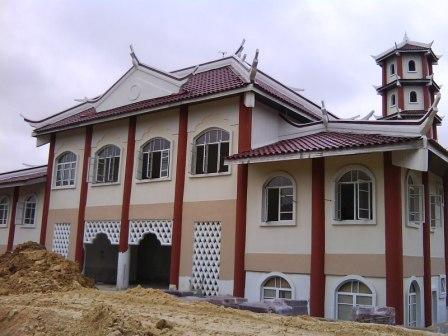

Hotel Grand Puteri
JAWHAR-MAIDAM
Kemudahan:
Alamat:
PT 3981 Jalan Masjid Abidin Bandar Kuala Terengganu, 20100 Kuala Terengganu
No. Telefon: 09-621 5555

Hotel The Regency Seri Warisan
JAWHAR-MAINPk
Kemudahan
Hotel empat tingkat (45 bilik),
pejabat,
pejabat pengurusan,
bilik mesyuarat,
bilik seminar, surau, dewan banquet dan bilik penginapan (25 unit standard double,
10 unit standard berkembar dan 10 uniy bilik family).
Alamat:
2453, Jalan Convent, 34000 Taiping, Perak Darul Ridzuan
No. Telefon: 05-805 2312
Hotel Klana Beach Resort
JAWHAR-MAINS
Kemudahan
Hotel empat tingkat (87 bilik) dan baitul hilal/balai cerap (dua tingkat),
tempat letak kereta, kubah, teleskop dan peralatan astronomi.
Alamat:
Kompleks Baitulhilal, Lot 4506, Batu 8, Jalan Pantai, 71050 Port Dickson, Negeri Sembilan
No. Telefon: 06-648 7888
Hotel Pantai Puteri
JAWHAR-MAIM
Kemudahan
Hotel tujuh tingkat (87 bilik), ruang pentadbiran, bilik mesyuarat, restoran (200 orang), dewan makan staf,
food & beverages store, pejabat chef, dewan serbaguna (250 orang),dewan seminar (60 orang),
dewan banquet (150 orang), surau, 4 unit dorm (lelaki dan perempuan), 2 unit bilik ketua rombongan dan
2 unit ruang persalinan (lelaki dan perempuan).
Alamat:
Pantai Puteri, Mukim Tanjung Kling, Daerah Melaka Tengah, 76400 Melaka
No. Telefon: 06 - 353 5555
Laman Web: www.pantaiputeri.hotels.net.my
Asrama Anak Yatim Darul Aitam Wal Masakin Sultanah Haminah Binti Hamidun
Alor Setar, Kedah.
Kemudahan
Bilik asrama, pejabat, surau, rumah warden, bilik sakit, bilik air, bilik mesyuarat, dewan makan, bilik wuduk, bilik basuh, bilik pam, bilik seterika dan stor kering.
Alamat
Asrama Pelajar Daerah Besut
Kg Raja Besut, Terengganu
Kemudahan
Alamat
Asrama Anak Yatim
Machang, Kelantan
Kemudahan
Bilik asrama, rumah warden, ruang serbaguna, bilik air/basuh, surau, dewan makan, bilik wuduk, bilik basuh, bilik seterika dan stor kering.
Alamat
Rumah Kedai Mukim Utan Aji
Kangar, Perlis
Kemudahan
8 lot rumah kedai, kelengkapan bekalan air dan elektrik, surau (Boleh menempatkan 50 orang jemaah) dan
tempat letak kereta.
Alamat
Kompleks Pendidikan Maahad Al-Mashoor Al-Islam
Balik Pulau, P.Pinang
Kemudahan
Blok akademik dan pentadbiran, asrama lelaki dan perempuan, dewan makan, pondok pengawal, tempat letak kereta berbumbung dan padang permainan (bola sepak, sepak takraw dan bola tampar).
Alamat
Ruang Niaga Mukim Ulu Kinta
Tambun, Perak
Kemudahan
Blok akademik dan pentadbiran, asrama lelaki dan perempuan, dewan makan, pondok pengawal, tempat letak kereta berbumbung dan padang permainan (bola sepak, sepak takraw dan bola tampar).
Alamat
Pusat Saudara Baru
Seremban, Negeri Sembilan

Kemudahan
Dewan solat utama (boleh memuatkan 500 orang jemaah), dewan serbaguna, dewan makan, bilik mesyuarat, bilik imam, perpustakaan, bilik VIP, bilik wuduk utama (lelaki dan perempuan), bilik persalinan perempuan,
bilik jenazah, courtyard, kelas fardhu ain (boleh memuatkan80 orang), pejabat, hostel dan kuarters mubaligh.
Alamat
Rumah Perlindungan Wanita
Masjid Taman Perling, Mukim Pulai, Johor Bahru
Kemudahan
Bilik penginapan single (17 unit), bilik penginapan double (5 unit), rumah warden, pejabat, bilik kaunseling, bilik mesyuarat, surau,
bilik latihan kemahiran, stor, ruang menunggu, tandas, bilik bacaan/istirehat, ruang jemuran, taska, pantry dan ruang makan.
Alamat
Pusat Hemodialisis
Majlis Agama Islam Negeri Johor/h5>
Kemudahan
Ruang dialisis (38 unit katil), bilik doktor, bilik serbaguna, bilik RO water, bilik farmasi, ruang legar,
tandas, bilik rawatan, bilik dispose, bilik pentadbiran, ruang menunggu, bilik stesen, jururawat, bilik stor, dewan dan dewan jamuan.
Alamat